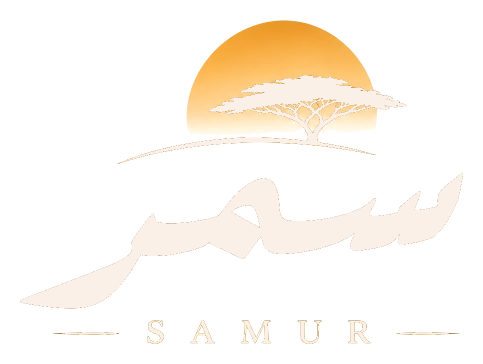
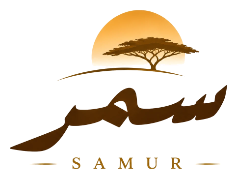
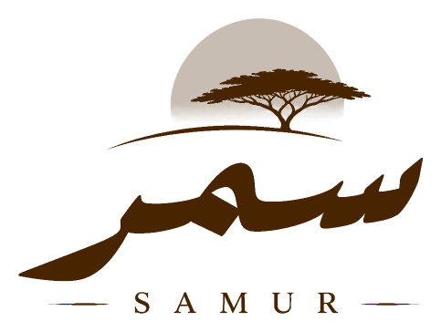
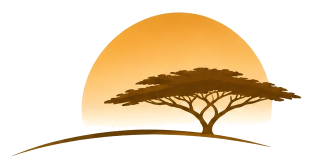
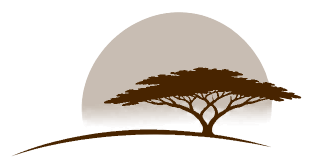
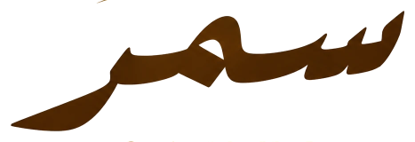
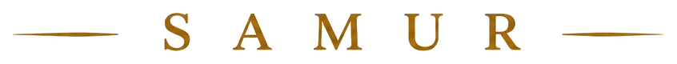

اتبع القطعان،
لا الزحام.
لا الزحام.
Samur · The Great Migration · 9 nights

For everyone who writes, designs or builds in Samur's name: the team, freelancers, agencies and the website developers.
Every page has English on the left and Arabic on the right. When the two differ, the Arabic is the reference, because Samur speaks to its guests in Arabic first.
The dark look of the Arabic website is the canonical brand. The paper look is kept for print and light documents only.
لكل من يكتب أو يصمّم أو يبني باسم سَمُر: الفريق، والمستقلّون، والوكالات، ومطوّرو الموقع.
في كل صفحة، الإنجليزية على اليسار والعربية على اليمين. وعند الاختلاف بينهما، النصّ العربي هو المرجع، لأن سَمُر تخاطب ضيوفها بالعربية أولًا.
المظهر الداكن للموقع العربي هو الهوية المعتمدة. أما المظهر الورقي الفاتح فيُستعمل للطباعة والمستندات الفاتحة فقط.
الدليل قصير عمدًا. إن لم تجد الإجابة هنا، فالقاعدة: أقلّ، وأهدأ، وأدقّ.
Samur was chosen because it means both of the things a safari is for. Say both when you introduce the brand, in this order.
اختير اسم سَمُر لأنه يحمل المعنيين اللذين من أجلهما يُسافر الناس إلى السفاري. اذكرهما معًا عند تقديم العلامة، وبهذا الترتيب.
Samur plans and hosts private safaris in Tanzania, Kenya and South Africa for Saudi couples, families and friend groups.
تخطّط سَمُر وتستضيف رحلات سفاري خاصة في تنزانيا وكينيا وجنوب أفريقيا للأزواج والعائلات ومجموعات الأصدقاء من السعودية.
Four proof points. Every page, post and proposal should carry at least one of them.
We work with a small set of owner-run camps and keep one vehicle and one guide to your party for the whole trip. You stop when you want to stop. You leave before anyone else is awake.
أربع نقاط إثبات. كل صفحة ومنشور وعرض ينبغي أن يحمل واحدة منها على الأقل.
نعمل مع مجموعة صغيرة من المخيمات التي يديرها أصحابها، ونخصّص لرفقتك سيارة واحدة ومرشدًا واحدًا طوال الرحلة. تتوقف حين تريد، وتنطلق قبل أن يستيقظ أحد.
The logo is one piece of artwork. The calligraphy is drawn, not typed. Never rebuild it in a font.
الشعار قطعة فنية واحدة. الخطّ مرسوم باليد لا مكتوب بخطّ رقمي. لا تُعد بناءه بأي خطّ.







#0C0A09 · hsl(20 14% 4%)The ground. Every screen starts here.الأرضية. كل شاشة تبدأ منه.#141110 · hsl(24 12% 7%)Bands, cards, forms, alternate pages.الأشرطة والبطاقات والنماذج والصفحات البديلة.#F4EAD7 · hsl(40 55% 90%)All text and the logo on night. Solid buttons.كل النصوص والشعار على الليل. الأزرار الصلبة.#D9A24A · hsl(38 64% 57%)The one accent: eyebrow dot, index numbers, focus ring. Never body text.اللون المميّز الوحيد: النقطة، الأرقام، إطار التركيز. ليس للنصوص.#F0A236 → #FCC672Logo only. The one gradient. Never a UI colour.للشعار فقط. التدرّج الوحيد. ليس لونًا للواجهة.#FAF0E7 · #482400Light contexts only: print, proposals, the full colour logo's own field.للسياقات الفاتحة فقط: الطباعة والعروض وخلفية الشعار الملوّن.Mostly night. Cream for everything you read. Gold in small doses. The sun appears once, in the logo, and once is enough.
ليل في الغالب. الكريمي لكل ما يُقرأ. الذهب بجرعات صغيرة. والشمس تظهر مرة واحدة في الشعار، ومرة تكفي.
الذهب على الورقي الفاتح لا يُقرأ (2 : 1). على الخلفيات الفاتحة النصّ بُنّي دائمًا.
Samur writes like a host who has done the trip fifty times. Short sentences. Real detail. No exclamation marks, no superlatives, no hard sell.
تكتب سَمُر كمضيف خاض الرحلة خمسين مرة. جمل قصيرة. تفاصيل حقيقية. بلا علامات تعجّب، ولا مبالغات، ولا بيع ملحّ.
Twelve tents or fewer, chosen for position and people.
Experience world-class boutique luxury in the heart of Africa!
Send a few lines and a planner replies within one working day with two or three routes and honest prices.
Contact us now for exclusive VIP packages at the best rates!
You leave before anyone else is awake.
Don't miss our amazing early-morning game drive add-on.
باكج سفاري VIP حصري بأفضل الأسعار! احجز الآن!
أرسل لنا بضعة أسطر، ويردّ عليك مخطّط من سَمُر خلال يوم عمل واحد بمسارين أو ثلاثة وأسعار واضحة.
تجربة فاخرة لا تُنسى تخطف الأنفاس في قلب أفريقيا!
اثنتا عشرة خيمة أو أقل، تُختار لموقعها ولأهلها.
لا تفوّت عرض جولة الصباح الباكر المذهلة!
تتوقف حين تريد، وتنطلق قبل أن يستيقظ أحد.
From the logo. Under a cover title or as a section divider, in gold or cream, one per page at most.
من الشعار. تحت عنوان الغلاف أو فاصلًا بين الأقسام، بالذهبي أو الكريمي، واحد في الصفحة على الأكثر.
Rules at cream 12 to 14% for tables, nav and footers. The 6 to 8 px gold dot opens every eyebrow.
خطوط بكريمي 12 إلى 14% للجداول والتنقّل والتذييل. والنقطة الذهبية تفتتح كل عنوان صغير.
Primary: solid cream with a night arrow disc. Secondary: dark glass with a hairline. Fully rounded, never square.
الأساسي: كريمي صلب مع قرص سهم ليليّ. الثانوي: زجاج داكن بخطّ رفيع. مستديرة بالكامل، لا مربّعة أبدًا.
Scrim and grain. Every photo on night fades into the ground along its lower 40%, in rgb(12 10 8). A fixed fractal-noise grain at 7% sits over every page. No other textures, no icon sets, no illustrations, no patterns. If something needs a symbol, use the emblem or a word.
الطبقة والحبيبات. كل صورة على الليل تذوب في الأرضية عبر 40% السفلية منها. وحبيبات خفيفة بنسبة 7% فوق كل صفحة. لا خامات أخرى، ولا مجموعات أيقونات، ولا رسوم، ولا زخارف. إن احتجت رمزًا فاستعمل الرمز أو كلمة.
:root{
--bg: 20 14% 4%; /* night #0C0A09 */
--bg-2: 24 12% 7%; /* night 2 #141110 */
--fg: 40 55% 90%; /* cream #F4EAD7 */
--accent: 38 64% 57%; /* gold #D9A24A · dot, index, focus only */
--line: hsl(var(--fg)/.12);
--scrim: 12 10 8; /* rgb(var(--scrim)/.55) over photos */
/* light contexts and print only */
--paper:#FAF0E7; --sand:#ECE3D1; --umber:#482400;
/* logo only, never UI */
--sun:#F0A236; --sun-2:#FCC672;
--ar-display:"Amiri",serif; /* 400 700 */
--ar-text:"IBM Plex Sans Arabic",sans-serif; /* 400 500 */
--en-display:"Instrument Serif",serif; /* 400 + italic */
--en-text:"Inter",sans-serif; /* 400 500 */
}
html,body{background:hsl(var(--bg));color:hsl(var(--fg))}
.num{direction:ltr;unicode-bidi:isolate;font-variant-numeric:tabular-nums}
القيم أعلاه هي قيم الموقع العربي الحالي كما بُني، مع إضافة ألوان الشعار والسياقات الفاتحة. لا تُغيَّر إلا بتحديث هذا الدليل.

